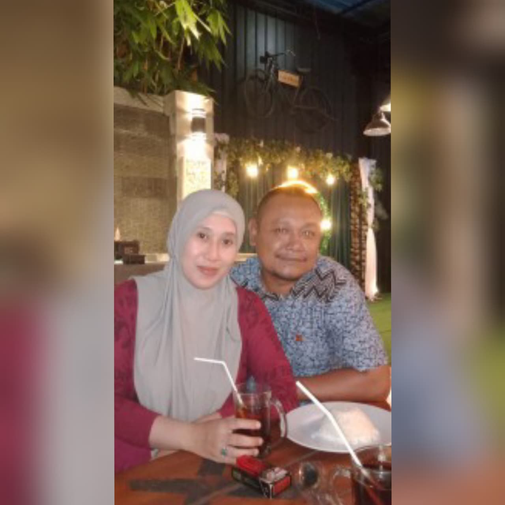
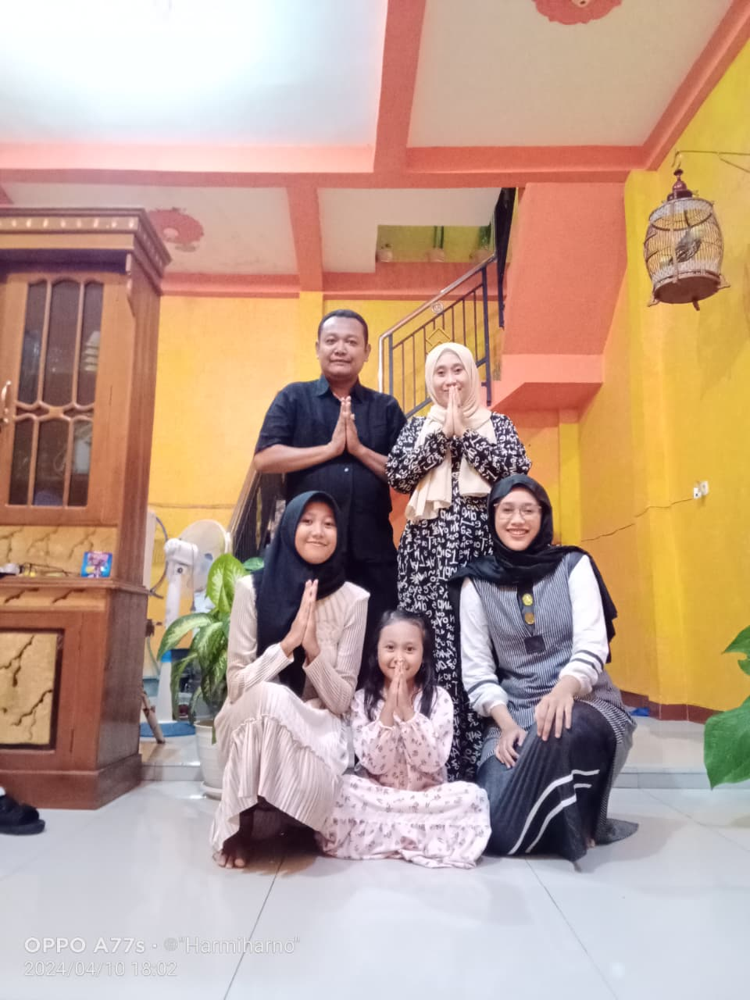
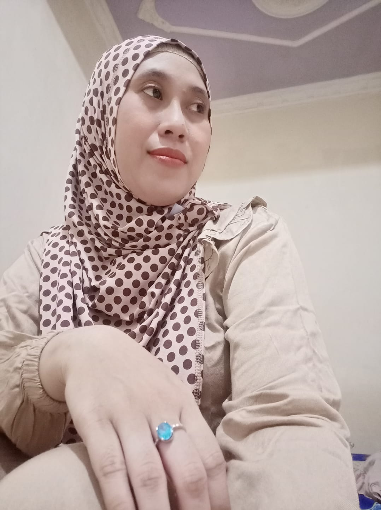

Selamat ulang tahun, Mamah. Terima kasih untuk doa, kasih sayang, dan pelukan yang tak pernah habis.
Semoga Mamah selalu sehat, bahagia, dan dilimpahi rezeki yang berkah. 🤍
Gallery



Doa dan Harapan
Semoga kesehatanmu selalu terjaga, dan harimu dipenuhi tenaga serta semangat.
Semoga semua rencana dan cita-citamu dimudahkan jalannya satu per satu.
Semoga kamu dikelilingi orang-orang baik yang tulus menyayangimu.
Semoga tawamu makin sering muncul, bahkan di hari yang paling sibuk.